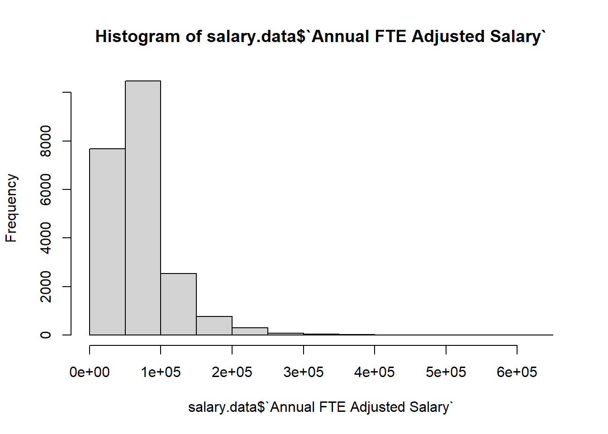
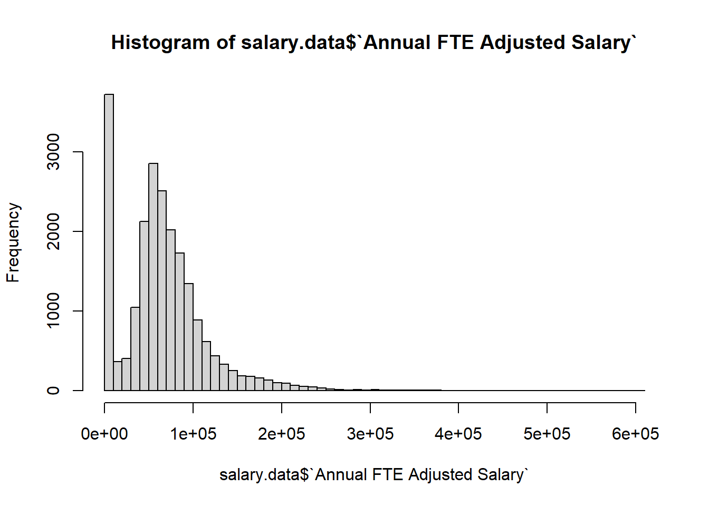

setwd("~/R-Tutorial")Getting Started
Introduction
R is a statistical and data programming language that also is useful for processing data and preparing reports. You perform operations by inputting text commands into a console. This text-based system provides a record of all commands performed, which makes it easy to revise a data process at any point.
You can save text commands to text files called scripts. When run, these scripts are processed from top to bottom. You can also run particular lines or chunks of code at a time. Scripts are just regular text files saved with the file extension “.R.” Alternatively, you can run commands that you type directly into the R Console. But by doing this you won’t keep a record of what you have run, and so it is bad form. Almost all of your work with R will be done in scripts.
Most operations are performed through the use of various functions, which simplify complex operations into a single line of code. A number of functions come built into R (Base-R), but you can expand the set of functions available to you by installing various packages.
This introduction will start by using a set of R functions that come in the tidyverse package, maintained by the same company that makes the R-Studio program (Posit). This makes relatively complex data functions much easier to manage. This will get you working with actual data very quickly. However, one feature of R is that there are often many ways to accomplish the same task. Later on we will look at more fundamental features of Base-R that will provide a deeper understanding of how R works.
Installation
Although R itself is a command-line program, it is easier to use with a graphical interface. This allows you to see the R command-line, scripts, plots, files, and R objects all in one place. The most popular graphical interface for R is R Studio.
First install the R programming language, and then the R-studio graphical interface. Accept all defaults during the installation. Once you have completed the installation, open R-studio to get started. It should find your installation of R automatically.
The first thing you need to do is set up a working directory, where all of the files you work with will live. In Windows the standard working directly is based in the “Documents” folder. So make a folder entitled “R-Tutorial” in your “Documents” folder. Then in the console change your working directory to that folder (you can also accomplish this in the bottom right Files menu in R-studio, by clicking on the “More” menu item).
Next you will need to install a few packages. You can use the menu in R-Studio (Tools -> Install Packages…), inputting the package names below into the “Packages” box. However, you can also run the following commands in the Console (bottom left part of the R-Studio screen). For this you will use two functions that are already in Base-R, install.packages() and library(). Note that any line of text that is preceded by “#” is ignored by R, and so is used to place comments in R code.
#A variety of functions for data science
install.packages("tidyverse")
#Used to read excel files
install.packages("readxl")
#Used to write excel files
install.packages("openxlsx")Note that you only need to install packages once for your installation of R, so you can just type them in the Console rather than put them in your script.
After installing the packages you will need, it is time to open up a new script that will contain all of your code. Again, this is just a text file, but it has a .R extension so R-Studio recognizes it as containing R code. This will allow you to rerun the data process any time you want, make adjustments, and/or share it with others. Code you put in the script will persist, whereas things run in the Console will go away after you leave R.
Go to the top menu in R-Studio and select “File” -> “New File” -> “R Script”. At first it will have a name of “Untitled,” so use “File” -> “Save As…” to save it as “Getting_Started.R”. Because you set the working directory to “R-Tutorial” this should go directly into that folder.
After installing the packages you need to load them with the library command. From now on (unless specified otherwise), add commands to the script file open in the upper left pane and run them by highlighting them and pressing the “Run” button (or Control + Enter)
#Load tidyverse package
library(tidyverse)── Attaching core tidyverse packages ──────────────────────── tidyverse 2.0.0 ──
✔ dplyr 1.1.2 ✔ readr 2.1.4
✔ forcats 1.0.0 ✔ stringr 1.5.0
✔ ggplot2 3.4.2 ✔ tibble 3.2.1
✔ lubridate 1.9.2 ✔ tidyr 1.3.0
✔ purrr 1.0.1
── Conflicts ────────────────────────────────────────── tidyverse_conflicts() ──
✖ dplyr::filter() masks stats::filter()
✖ dplyr::lag() masks stats::lag()
ℹ Use the conflicted package (<http://conflicted.r-lib.org/>) to force all conflicts to become errors#Load readxl package
library(readxl)
#Load openxlsx package
library(openxlsx)Loading and Visually Examining Data
Variables
You assign values to variables in memory using the <- operator.
# This assigns 4.3 to the variable x
x <- 4.3In the example above you can think of 4.3 as being put into a variable called x. Lines can continue by using a carriage return, as long as an operator is included just before the return. This will help you to keep code from sprawling.
You can see what is in x by just typing those variables into the terminal (or using R-studio’s Environment feature at the top right pane to look at them).
x[1] 4.3Loading Data from Excel
Now you are ready to read in some data and start working with it. For much of this tutorial we will work with anonymized public UW salary data (courtesy of UFAS#223). It provides a variety of fields and might be similar to data that you may encounter in your job. Find the data here, and place it in a new directory called “Example_Data” within the “R-Tutorial” folder you are working in.
Now you are ready to load the data into R using a function from the readxl package you just loaded. Note that R can load a variety of file formats, including .csv, as well as from other statistical packages like SPSS, SAS, and Stata. The easiest way to load data is via the upper-right pane and the “Environment” -> “Import Dataset” button. This will write the code to import data for you, but you can always just write it directly.
The following command will read in the excel file, using the read_excel function from the readxl package and place that data into the salary.data object using <-. You can think of that like an arrow, placing whatever is on its right side into the object on the left side in your computer’s memory.
#Load salary_data.xlsx into the variable salary.data
salary.data <- read_excel("Example_Data/salary_data.xlsx")
#Display data frame
salary.data# A tibble: 21,857 × 13
`Person Num` Division Department `Employee Category` `Job Code` Title
<dbl> <chr> <chr> <chr> <chr> <chr>
1 1 UW - Madison Ex… Positive … AS OE009 Outr…
2 2 Intercollegiate… General O… AS AE002 Acad…
3 3 School of Educa… Prof Lear… AS OE008 Outr…
4 4 VC for Rsrch & … Administr… AS AD073 Admi…
5 5 Sch of Med & Pu… UW Compre… AS OE009 Outr…
6 6 Information Tec… Systems E… AS IT033 Serv…
7 7 University Poli… Police Su… CP CP033X Poli…
8 8 School of Human… School of… AS AD059 Chie…
9 9 Information Tec… User Serv… CP IT050 User…
10 10 College of Lett… Interdis … CP FP031 Faci…
# ℹ 21,847 more rows
# ℹ 7 more variables: `Full-time Equivalent` <dbl>, `Annual Full Salary` <dbl>,
# `Annual FTE Adjusted Salary` <dbl>, `FLSA Status` <chr>,
# `Salary Grade` <chr>, `Date of Hire` <dttm>,
# `Appointment Type and Length` <chr>The salary.data variable is a data frame. This is the primary data object in R, and is akin to a spreadsheet. Because we used a read_excel() function to load in the data frame from the excel file, it is actually a special kind of data frame called a tibble. These have a few special features for use in the tidyverse. However, it won’t be important for most of what we do here.
You can see the salary.data data frame in the top-right pane, under “Environment.” Clicking on the little arrow next to its name will show information about data frame’s variables (columns). If you click on it the data frame name it will open in the top left pane.
Exercise: Looking at Data
Use the Environment pane and the data viewer (top left pane) to answer a few questions about salary.data:
- How many rows are in the data set? How many columns?
- What are the different types of data in the data set? Which columns are numbers and which are character strings. How do they differ? Are there any other types of data?
- Use the “filter” button to show only those people with “Professor” in their title.
Examining and Summarizing Data with Code
R-Studio provides a number of ways of visually inspecting data. These are similar to some tools found in Excel, but won’t get us very far (and aren’t as good as excel!). Instead, we will need to use R code to examine and transform data.
We’ll start with a complete example of R code (using tidyverse functions) that summarizes the salary data, then we’ll break it down to show how it works. There is a lot going on in this code chunk, so you won’t know what is going on here for a while. Much of what we do will be to understand code chunks like this and be able to reproduce them.
#This creates a table of job titles as rows, divisions as columns,
##with median salary (counts) in cells
#Note that variable (column) names with spaces and special characters are surrounded with ``.
##Variable names without spaces or special characters don't need ``.
salary.fs.as.by.title.div <- salary.data %>%
#Only include Academic Staff appointments that are full-time
filter(`Employee Category` == "AS" & `Full-time Equivalent` == 1) %>%
#Only include Colleges with UGRD programs
filter(Division %in% c("College of Ag & Life Science",
"School of Pharmacy",
"College of Engineering",
"School of Human Ecology",
"School of Education",
"College of Letters & Science",
"School of Nursing",
"Wisconsin School of Business")) %>%
#Group by Title and Division
group_by(Division, Title) %>%
#Use Summarize to find salary median (remove NAs) and counts
summarize(median = median(`Annual Full Salary`, na.rm = TRUE),
n = n()) %>% #Counts the number of rows
#Use ungroup when you are done using a group
ungroup() %>%
#Create a new variable Combining salary (rounded to the dollar)
#and counts to in one cell.
mutate(median_n = paste(round(median, digits = 0),
" (", n, ")", sep = "")) %>%
#Keeps only the Division, Title, and median_n columns
select(Division, Title, median_n) %>%
#pivots the data so that Divisions become the columns.
pivot_wider(data = ., names_from = Division, values_from = median_n)Each line in the above block of code accomplishes a single task. Once one step is finished the data is passed through the pipe (%>%) to the next level. You can see the resultant data frame by looking at the salary.fs.as.by.title.div data frame in the data viewer.
Exercise: Making Changes to Code
Try to make some adjustments to the code block above, rerun it, and see what happens. Hint: We haven’t seen how this works yet, but you can refer to a single variable (column) of a data frame using the $, and the function unique() will show you all unique values for what you put into it. So, for instance, unique(salary.data$`Employee Category`) will show you the unique Employee Categories in the data.
- Change the Employee Category to Permanent Classified Staff (CP)
- Instead of Division group by Department and only include employees in The College of Letters & Science
- Find the mean salary instead of the median
- Remove the filter for only including full-time employees, but then also change the salary summarized to the Annual FTE Adjusted Salary.
Filter
You can use filter() to keep rows the the data frame according to a set of conditions. This can include Boolean (TRUE/FALSE) variables and/or logical operators. See Appendix B for a list of logical operators and how to use them.
# This keeps salarys above $500k
salary.data %>%
filter(`Annual Full Salary` > 500000)# A tibble: 2 × 13
`Person Num` Division Department `Employee Category` `Job Code` Title
<dbl> <chr> <chr> <chr> <chr> <chr>
1 18003 College of Lette… Economics FA FA020 Prof…
2 20797 School of Veteri… Pathobiol… FA FA020 Prof…
# ℹ 7 more variables: `Full-time Equivalent` <dbl>, `Annual Full Salary` <dbl>,
# `Annual FTE Adjusted Salary` <dbl>, `FLSA Status` <chr>,
# `Salary Grade` <chr>, `Date of Hire` <dttm>,
# `Appointment Type and Length` <chr># Use a negation sign (!) to keep rows that don't meet the condition
salary.data %>%
filter(!(`Annual Full Salary` > 500000))# A tibble: 21,855 × 13
`Person Num` Division Department `Employee Category` `Job Code` Title
<dbl> <chr> <chr> <chr> <chr> <chr>
1 1 UW - Madison Ex… Positive … AS OE009 Outr…
2 2 Intercollegiate… General O… AS AE002 Acad…
3 3 School of Educa… Prof Lear… AS OE008 Outr…
4 4 VC for Rsrch & … Administr… AS AD073 Admi…
5 5 Sch of Med & Pu… UW Compre… AS OE009 Outr…
6 6 Information Tec… Systems E… AS IT033 Serv…
7 7 University Poli… Police Su… CP CP033X Poli…
8 8 School of Human… School of… AS AD059 Chie…
9 9 Information Tec… User Serv… CP IT050 User…
10 10 College of Lett… Interdis … CP FP031 Faci…
# ℹ 21,845 more rows
# ℹ 7 more variables: `Full-time Equivalent` <dbl>, `Annual Full Salary` <dbl>,
# `Annual FTE Adjusted Salary` <dbl>, `FLSA Status` <chr>,
# `Salary Grade` <chr>, `Date of Hire` <dttm>,
# `Appointment Type and Length` <chr># The == operator keeps exactly one value
salary.data %>%
filter(`Person Num` == 500)# A tibble: 1 × 13
`Person Num` Division Department `Employee Category` `Job Code` Title
<dbl> <chr> <chr> <chr> <chr> <chr>
1 500 School of Educat… Art AS TL020 Lect…
# ℹ 7 more variables: `Full-time Equivalent` <dbl>, `Annual Full Salary` <dbl>,
# `Annual FTE Adjusted Salary` <dbl>, `FLSA Status` <chr>,
# `Salary Grade` <chr>, `Date of Hire` <dttm>,
# `Appointment Type and Length` <chr># The %in% operator keeps a vector of values
salary.data %>%
filter(`Person Num` %in% c(3, 89))# A tibble: 2 × 13
`Person Num` Division Department `Employee Category` `Job Code` Title
<dbl> <chr> <chr> <chr> <chr> <chr>
1 3 School of Educat… Prof Lear… AS OE008 Outr…
2 89 Sch of Med & Pub… Pediatrics AS IC016 Assi…
# ℹ 7 more variables: `Full-time Equivalent` <dbl>, `Annual Full Salary` <dbl>,
# `Annual FTE Adjusted Salary` <dbl>, `FLSA Status` <chr>,
# `Salary Grade` <chr>, `Date of Hire` <dttm>,
# `Appointment Type and Length` <chr># Use logical operators like "&" to connect two (or more) statements.
salary.data %>%
filter(`Annual Full Salary` > 400000 & Division == "College of Letters & Science")# A tibble: 3 × 13
`Person Num` Division Department `Employee Category` `Job Code` Title
<dbl> <chr> <chr> <chr> <chr> <chr>
1 10831 College of Lette… Economics FA FA020 Prof…
2 12597 College of Lette… Economics FA FA020 Prof…
3 18003 College of Lette… Economics FA FA020 Prof…
# ℹ 7 more variables: `Full-time Equivalent` <dbl>, `Annual Full Salary` <dbl>,
# `Annual FTE Adjusted Salary` <dbl>, `FLSA Status` <chr>,
# `Salary Grade` <chr>, `Date of Hire` <dttm>,
# `Appointment Type and Length` <chr># Use () to determine the order of more complex logical statements
salary.data %>%
filter(`Annual Full Salary` > 400000 & !(Division == "College of Letters & Science"))# A tibble: 9 × 13
`Person Num` Division Department `Employee Category` `Job Code` Title
<dbl> <chr> <chr> <chr> <chr> <chr>
1 734 Wisconsin School… Finance FA FA020 Prof…
2 940 Sch of Med & Pub… Biomolecu… FA FA020 Prof…
3 2473 Wisconsin School… Real Esta… FA FA020 Prof…
4 3084 College of Ag & … Plant Pat… FA FA020 Prof…
5 3271 Sch of Med & Pub… Populatio… AS IC015 Asso…
6 9616 Wisconsin School… Accting &… FA FA020 Prof…
7 14106 Wisconsin School… Managemen… FA FA020 Prof…
8 18261 Wisconsin School… Finance FA FA020 Prof…
9 20797 School of Veteri… Pathobiol… FA FA020 Prof…
# ℹ 7 more variables: `Full-time Equivalent` <dbl>, `Annual Full Salary` <dbl>,
# `Annual FTE Adjusted Salary` <dbl>, `FLSA Status` <chr>,
# `Salary Grade` <chr>, `Date of Hire` <dttm>,
# `Appointment Type and Length` <chr>Select
Choose which columns of a data frame to keep (or exclude) with the select() function. To keep columns list them, to exclude columns list them with a “-”. You can also rename columns while selecting them by using the = with the new name on the left side and the old name on the right.
# This keeps columns "Person_Num", "Title", and "Annual Full Salary"
salary.data %>%
select(`Person Num`, Title, `Annual Full Salary`) # A tibble: 21,857 × 3
`Person Num` Title `Annual Full Salary`
<dbl> <chr> <dbl>
1 1 Outreach Specialist 58845
2 2 Academic Advisor 54060
3 3 Outreach Program Manager 66825
4 4 Admin Assoc Dir (Inst) 105000
5 5 Outreach Specialist 49683
6 6 Service Coordinator I 85301
7 7 Police Captain 131539
8 8 Chief of Staff I (C) 101301
9 9 User Support Specialist II 59155
10 10 Facilities Technician III 54766
# ℹ 21,847 more rows# You can also exclude columns and keeps all others.
salary.data %>%
select(-`Job Code`, -`FLSA Status`)# A tibble: 21,857 × 11
`Person Num` Division Department `Employee Category` Title
<dbl> <chr> <chr> <chr> <chr>
1 1 UW - Madison Extension Positive … AS Outr…
2 2 Intercollegiate Athletics General O… AS Acad…
3 3 School of Education Prof Lear… AS Outr…
4 4 VC for Rsrch & Grad Educat… Administr… AS Admi…
5 5 Sch of Med & Public Health UW Compre… AS Outr…
6 6 Information Technology Systems E… AS Serv…
7 7 University Police Dept Police Su… CP Poli…
8 8 School of Human Ecology School of… AS Chie…
9 9 Information Technology User Serv… CP User…
10 10 College of Letters & Scien… Interdis … CP Faci…
# ℹ 21,847 more rows
# ℹ 6 more variables: `Full-time Equivalent` <dbl>, `Annual Full Salary` <dbl>,
# `Annual FTE Adjusted Salary` <dbl>, `Salary Grade` <chr>,
# `Date of Hire` <dttm>, `Appointment Type and Length` <chr># You can use select to rename columns too, though this only keeps listed columns
salary.data %>%
select(ID = `Person Num`, Title, Salary = `Annual Full Salary`)# A tibble: 21,857 × 3
ID Title Salary
<dbl> <chr> <dbl>
1 1 Outreach Specialist 58845
2 2 Academic Advisor 54060
3 3 Outreach Program Manager 66825
4 4 Admin Assoc Dir (Inst) 105000
5 5 Outreach Specialist 49683
6 6 Service Coordinator I 85301
7 7 Police Captain 131539
8 8 Chief of Staff I (C) 101301
9 9 User Support Specialist II 59155
10 10 Facilities Technician III 54766
# ℹ 21,847 more rows# A separate function rename will will not exclude those columns not listed.
salary.data %>%
rename(ID = `Person Num`, Salary = `Annual Full Salary`)# A tibble: 21,857 × 13
ID Division Department `Employee Category` `Job Code` Title
<dbl> <chr> <chr> <chr> <chr> <chr>
1 1 UW - Madison Extension Positive … AS OE009 Outr…
2 2 Intercollegiate Athlet… General O… AS AE002 Acad…
3 3 School of Education Prof Lear… AS OE008 Outr…
4 4 VC for Rsrch & Grad Ed… Administr… AS AD073 Admi…
5 5 Sch of Med & Public He… UW Compre… AS OE009 Outr…
6 6 Information Technology Systems E… AS IT033 Serv…
7 7 University Police Dept Police Su… CP CP033X Poli…
8 8 School of Human Ecology School of… AS AD059 Chie…
9 9 Information Technology User Serv… CP IT050 User…
10 10 College of Letters & S… Interdis … CP FP031 Faci…
# ℹ 21,847 more rows
# ℹ 7 more variables: `Full-time Equivalent` <dbl>, Salary <dbl>,
# `Annual FTE Adjusted Salary` <dbl>, `FLSA Status` <chr>,
# `Salary Grade` <chr>, `Date of Hire` <dttm>,
# `Appointment Type and Length` <chr>Group By
The group_by function does not do anything visible on its own, but groups the data frame for use by other functions (like )
# This groups the data by Division and Title
# Notice that nothing visually changes about the data.
salary.data %>%
group_by(Division, Title)# A tibble: 21,857 × 13
# Groups: Division, Title [3,258]
`Person Num` Division Department `Employee Category` `Job Code` Title
<dbl> <chr> <chr> <chr> <chr> <chr>
1 1 UW - Madison Ex… Positive … AS OE009 Outr…
2 2 Intercollegiate… General O… AS AE002 Acad…
3 3 School of Educa… Prof Lear… AS OE008 Outr…
4 4 VC for Rsrch & … Administr… AS AD073 Admi…
5 5 Sch of Med & Pu… UW Compre… AS OE009 Outr…
6 6 Information Tec… Systems E… AS IT033 Serv…
7 7 University Poli… Police Su… CP CP033X Poli…
8 8 School of Human… School of… AS AD059 Chie…
9 9 Information Tec… User Serv… CP IT050 User…
10 10 College of Lett… Interdis … CP FP031 Faci…
# ℹ 21,847 more rows
# ℹ 7 more variables: `Full-time Equivalent` <dbl>, `Annual Full Salary` <dbl>,
# `Annual FTE Adjusted Salary` <dbl>, `FLSA Status` <chr>,
# `Salary Grade` <chr>, `Date of Hire` <dttm>,
# `Appointment Type and Length` <chr>Mutate
The mutate() function has a funny name, but it essentially allows you to create calculated fields. It does not aggregate over the rows, but creates a new column in the same data frame structure. Aggregated values can be used in calculations too.
# Create new columns with FTE adjusted salary (though this already exists in the data) and years employed.
salary.data %>%
mutate(salary = `Annual Full Salary` * `Full-time Equivalent`,
years_employed = time_length(difftime(Sys.Date(), as.Date(`Date of Hire`)), "years"))# A tibble: 21,857 × 15
`Person Num` Division Department `Employee Category` `Job Code` Title
<dbl> <chr> <chr> <chr> <chr> <chr>
1 1 UW - Madison Ex… Positive … AS OE009 Outr…
2 2 Intercollegiate… General O… AS AE002 Acad…
3 3 School of Educa… Prof Lear… AS OE008 Outr…
4 4 VC for Rsrch & … Administr… AS AD073 Admi…
5 5 Sch of Med & Pu… UW Compre… AS OE009 Outr…
6 6 Information Tec… Systems E… AS IT033 Serv…
7 7 University Poli… Police Su… CP CP033X Poli…
8 8 School of Human… School of… AS AD059 Chie…
9 9 Information Tec… User Serv… CP IT050 User…
10 10 College of Lett… Interdis … CP FP031 Faci…
# ℹ 21,847 more rows
# ℹ 9 more variables: `Full-time Equivalent` <dbl>, `Annual Full Salary` <dbl>,
# `Annual FTE Adjusted Salary` <dbl>, `FLSA Status` <chr>,
# `Salary Grade` <chr>, `Date of Hire` <dttm>,
# `Appointment Type and Length` <chr>, salary <dbl>, years_employed <dbl># Use mean to calculate relative to all other salaries
salary.data %>%
mutate(salary_relative_to_title = `Annual FTE Adjusted Salary` - mean(`Annual FTE Adjusted Salary`))# A tibble: 21,857 × 14
`Person Num` Division Department `Employee Category` `Job Code` Title
<dbl> <chr> <chr> <chr> <chr> <chr>
1 1 UW - Madison Ex… Positive … AS OE009 Outr…
2 2 Intercollegiate… General O… AS AE002 Acad…
3 3 School of Educa… Prof Lear… AS OE008 Outr…
4 4 VC for Rsrch & … Administr… AS AD073 Admi…
5 5 Sch of Med & Pu… UW Compre… AS OE009 Outr…
6 6 Information Tec… Systems E… AS IT033 Serv…
7 7 University Poli… Police Su… CP CP033X Poli…
8 8 School of Human… School of… AS AD059 Chie…
9 9 Information Tec… User Serv… CP IT050 User…
10 10 College of Lett… Interdis … CP FP031 Faci…
# ℹ 21,847 more rows
# ℹ 8 more variables: `Full-time Equivalent` <dbl>, `Annual Full Salary` <dbl>,
# `Annual FTE Adjusted Salary` <dbl>, `FLSA Status` <chr>,
# `Salary Grade` <chr>, `Date of Hire` <dttm>,
# `Appointment Type and Length` <chr>, salary_relative_to_title <dbl># Use group_by to calculate relative to title mean salary
salary.data %>%
group_by(Title) %>%
mutate(salary_relative_to_title = `Annual FTE Adjusted Salary` - mean(`Annual FTE Adjusted Salary`))# A tibble: 21,857 × 14
# Groups: Title [1,034]
`Person Num` Division Department `Employee Category` `Job Code` Title
<dbl> <chr> <chr> <chr> <chr> <chr>
1 1 UW - Madison Ex… Positive … AS OE009 Outr…
2 2 Intercollegiate… General O… AS AE002 Acad…
3 3 School of Educa… Prof Lear… AS OE008 Outr…
4 4 VC for Rsrch & … Administr… AS AD073 Admi…
5 5 Sch of Med & Pu… UW Compre… AS OE009 Outr…
6 6 Information Tec… Systems E… AS IT033 Serv…
7 7 University Poli… Police Su… CP CP033X Poli…
8 8 School of Human… School of… AS AD059 Chie…
9 9 Information Tec… User Serv… CP IT050 User…
10 10 College of Lett… Interdis … CP FP031 Faci…
# ℹ 21,847 more rows
# ℹ 8 more variables: `Full-time Equivalent` <dbl>, `Annual Full Salary` <dbl>,
# `Annual FTE Adjusted Salary` <dbl>, `FLSA Status` <chr>,
# `Salary Grade` <chr>, `Date of Hire` <dttm>,
# `Appointment Type and Length` <chr>, salary_relative_to_title <dbl>Summarize
The summarize() command aggregates the values in a column. It will reduce the number of rows and columns. Use group_by to set the aggregation groups.
# Calculate mean salary of the total data set and how many people are in it.
salary.data %>%
summarize(mean_salary = mean(`Annual FTE Adjusted Salary`),
n_people = n_distinct(`Person Num`))# A tibble: 1 × 2
mean_salary n_people
<dbl> <int>
1 65729. 21231# Find mean salary and number of people by Division and Department
salary.data %>%
group_by(Division, Department) %>%
summarize(mean_salary = mean(`Annual FTE Adjusted Salary`),
n_people = n_distinct(`Person Num`))# A tibble: 534 × 4
# Groups: Division [36]
Division Department mean_salary n_people
<chr> <chr> <dbl> <int>
1 Business Services Accounting Services 68278. 49
2 Business Services Administration 64438 1
3 Business Services Bursar 69852. 12
4 Business Services Business Analysis 86755 3
5 Business Services Content Mgmt, Comm & Train… 74119. 4
6 Business Services Materials Distribution Svcs 54225. 22
7 Business Services Purchasing Services 78259. 21
8 Business Services Risk Management 91040. 4
9 College of Ag & Life Science Admin - Cooperative Extens… 20686. 1
10 College of Ag & Life Science Admin - Dean & Director 59947. 10
# ℹ 524 more rowsOther helpful functions
As mentioned already, there are several helpful functions for exploring a data set. The ones we look at here are all from base-r, and so it is easiest to use them with the $ to denote columns. Here I will show unique() which provides all of the unique values for a column, table() which counts the rows that match each possible value for the column, and hist() which produces a histogram of the column. Note that these tools are for quick exploration rather than presentation and reporting. There are other functions, like the ggplot2 and kable set of functions, useful for making graphs and tables that look good.
#Shows the unique values for the Division column
unique(salary.data$`Division`) [1] "UW - Madison Extension" "Intercollegiate Athletics"
[3] "School of Education" "VC for Rsrch & Grad Education"
[5] "Sch of Med & Public Health" "Information Technology"
[7] "University Police Dept" "School of Human Ecology"
[9] "College of Letters & Science" "Div for Teaching and Learning"
[11] "Law School" "Business Services"
[13] "College of Ag & Life Science" "General Services"
[15] "Wi Veterinary Diagnostic Lab" "International Division"
[17] "Facilities Planning & Mgmt" "Wisconsin Public Media"
[19] "School of Pharmacy" "School of Veterinary Medicine"
[21] "University Housing" "College of Engineering"
[23] "Division of Student Life" "Wi State Laboratory Hygiene"
[25] "Division of Continuing Studies" "General Library"
[27] "School of Nursing" "Nelson Inst Envrnmntal Study"
[29] "Recreation & Wellbeing" "Wisconsin School of Business"
[31] "Univ Health Services" "Wisconsin Union"
[33] "Enrollment Management" "General Educational Admin"
[35] "Officer Education" "Division of The Arts" #Shows the number of rows corresponding to each Division
table(salary.data$Division)
Business Services College of Ag & Life Science
116 1185
College of Engineering College of Letters & Science
803 2601
Div for Teaching and Learning Division of Continuing Studies
111 165
Division of Student Life Division of The Arts
113 9
Enrollment Management Facilities Planning & Mgmt
164 1167
General Educational Admin General Library
38 183
General Services Information Technology
464 529
Intercollegiate Athletics International Division
300 131
Law School Nelson Inst Envrnmntal Study
175 89
Officer Education Recreation & Wellbeing
36 70
Sch of Med & Public Health School of Education
5998 856
School of Human Ecology School of Nursing
161 145
School of Pharmacy School of Veterinary Medicine
1628 617
Univ Health Services University Housing
192 465
University Police Dept UW - Madison Extension
129 617
VC for Rsrch & Grad Education Wi State Laboratory Hygiene
1101 361
Wi Veterinary Diagnostic Lab Wisconsin Public Media
95 297
Wisconsin School of Business Wisconsin Union
381 365 #Shows a 2X2 table for Division and Employee Category
table(salary.data$Division, salary.data$`Employee Category`)
AS CJ CP FA
Business Services 63 3 50 0
College of Ag & Life Science 693 23 224 245
College of Engineering 538 2 52 211
College of Letters & Science 1497 7 224 873
Div for Teaching and Learning 107 0 4 0
Division of Continuing Studies 138 2 14 11
Division of Student Life 101 0 12 0
Division of The Arts 9 0 0 0
Enrollment Management 144 1 19 0
Facilities Planning & Mgmt 267 0 900 0
General Educational Admin 34 0 4 0
General Library 122 2 59 0
General Services 408 6 50 0
Information Technology 296 6 227 0
Intercollegiate Athletics 198 0 102 0
International Division 115 2 14 0
Law School 124 0 18 33
Nelson Inst Envrnmntal Study 69 1 7 12
Officer Education 33 0 3 0
Recreation & Wellbeing 48 0 22 0
Sch of Med & Public Health 5108 18 417 455
School of Education 646 4 41 165
School of Human Ecology 106 2 14 39
School of Nursing 112 1 11 21
School of Pharmacy 1590 0 7 31
School of Veterinary Medicine 359 18 192 48
Univ Health Services 130 0 62 0
University Housing 140 5 320 0
University Police Dept 16 3 110 0
UW - Madison Extension 520 10 30 57
VC for Rsrch & Grad Education 944 3 154 0
Wi State Laboratory Hygiene 236 5 120 0
Wi Veterinary Diagnostic Lab 62 0 33 0
Wisconsin Public Media 272 2 23 0
Wisconsin School of Business 281 0 11 89
Wisconsin Union 124 4 237 0#Shows a histogram for Annual FTE Adjusted Salary
#Note that you can use various parameters to make this not look terrible.
hist(salary.data$`Annual FTE Adjusted Salary`)
#Sets the number of bins in the histogram to a 50 from the default.
hist(salary.data$`Annual FTE Adjusted Salary`, breaks = 50)
Combining Multiple Data Sources
We’ve looked at a few functions that will help to summarize or change the contents of a data set, but one of the reasons to use R is that it is easy to combine data sets as well.
Download the pay grades .xlsx file and place it into the same “Example_Data” folder as the salary file. We are going to load it and then join it to our existing data set.
#Load pay_grades.xlsx into the variable pay.grades
pay.grades <- read_excel("Example_Data/pay_grades.xlsx")
#Display data frame
pay.grades# A tibble: 52 × 2
`Salary Grade` `Annual Salary Range`
<dbl> <chr>
1 15 $31,200–63,800
2 16 $33,700–68,970
3 17 $36,500–74,470
4 18 $39,400–80,520
5 19 $42,600–86,900
6 20 $46,000–93,940
7 21 $49,700–101,530
8 22 $53,700–109,670
9 23 $58,000–118,360
10 24 $63,800–130,240
# ℹ 42 more rowsExercise: Making variable comparable
Examine the “Salary Grade” variables in the pay.grades and salary.data to figure out whether they can be the matching columns for our join. If not, how do they need to change to make them comparable?
Fixing mismatched columns
There are two ways of taking care of this. One is simpler than the other. We will look at both methods, but will only apply the more difficult to the data sets.
The first method (simpler) just converts “Salary Grade” in salary.data to a number using the as.numeric() function. There are several other similar functions (as.character(), as.Date(), as.logical()) that convert columns to other types of data. The downside of this is that it changes the original form of Salary Grade as a three digit value with a leading 0.
#Convert Salary Grade to a number
salary.data <- salary.data %>%
mutate(`Salary Grade` = as.numeric(`Salary Grade`))
salary.data$`Salary Grade`The second method edits pay.grades using the str_pad() function, adding a leading 0 to all values in the “Salary Grade” column so that they match the column in salary.data.
#This makes Salary Grade into a character (as.character()) and then pads it on the
#left side to 3 spaces using the "0" character.
pay.grades <- pay.grades %>%
mutate(`Salary Grade` = str_pad(as.character(`Salary Grade`), width = 3,
side = "left", pad = "0"))
pay.grades$`Salary Grade` [1] "015" "016" "017" "018" "019" "020" "021" "022" "023" "024" "025" "026"
[13] "027" "028" "029" "030" "031" "032" "033" "034" "035" "051" "052" "053"
[25] "054" "055" "056" "057" "058" "059" "060" "061" "062" "063" "064" "065"
[37] "066" "067" "068" "069" "070" "072" "073" "074" "075" "077" "078" "079"
[49] "080" "097" "098" "099"Joins
After we know that the columns will match correctly, we can use inner_join() to add the “Annual Salary Range” data to each row of salary.data (saving the result to a new variable). Note that there are four types of joins we will discuss - inner_join will only keep rows that match in both data frames. Joins in R are similar to joins in SQL.
#Join the two data sets and save the resultant data frame to
#salary.data.with.pay.grades
#Note that you can also use a %>% for joins, but then you leave out x.
salary.data.with.pay.grades <- inner_join(x = salary.data, y = pay.grades, by = "Salary Grade")The problem with inner joins is that you lose data if it does not match in the other data set. For instance, consider a version of pay.grades that is missing a bunch of the pay.grades
#Using inner_join will eliminate rows in salary.data that don't show up in pay.grades.
#Use as.numeric to convert the Salary Grade to a number for the filter.
pay.grades.shorter <- pay.grades %>%
filter(as.numeric(`Salary Grade`) < 20)
pay.grades.shorter# A tibble: 5 × 2
`Salary Grade` `Annual Salary Range`
<chr> <chr>
1 015 $31,200–63,800
2 016 $33,700–68,970
3 017 $36,500–74,470
4 018 $39,400–80,520
5 019 $42,600–86,900 #Inner_join will only keep rows found in both salary.data and pay.grades.shorter
salary.data.shorter <- inner_join(x = salary.data, y = pay.grades.shorter, by = "Salary Grade")Compare salary.data.shorter with the original salary.data. We’ve lost a lot of rows!
Perhaps we want to keep all of the rows in salary.data, but just have NA values where pay.grades.shorter doesn’t match. A left_join() will do this. A right_join() will do the same thing, but will keep all rows in the y data frame instead of the x data frame. Finally a **full_join()* will keep all rows in both data frames regardless of whether they match.
pay.grades.shorter# A tibble: 5 × 2
`Salary Grade` `Annual Salary Range`
<chr> <chr>
1 015 $31,200–63,800
2 016 $33,700–68,970
3 017 $36,500–74,470
4 018 $39,400–80,520
5 019 $42,600–86,900 #Left_join will keep all rows found in both salary.data and those in pay.grades.shorter that match.
salary.data.left <- left_join(x = salary.data, y = pay.grades.shorter, by = "Salary Grade")
#Right_join will keep all rows found in pay.grades.shorter and those in salary.data that match.
salary.data.right <- right_join(x = salary.data, y = pay.grades.shorter, by = "Salary Grade")
#Full_join will keep all rows found in both data sets regardless of whether they match.
salary.data.full <- full_join(x = salary.data, y = pay.grades.shorter, by = "Salary Grade")Section Exercise
Let’s take everything you’ve learned in this section and apply to the data that we’ve been working with.
Start out by making sure that you have a fresh copy of the data, by loading it again. It might also be a good idea to do this work in a fresh script called “Section1_Exercise.R”. If you still need to download the salary and/or pay grade data find descriptions of how to do that (and where to put it) above.
#Sets the working directory to the proper folder if necessary
setwd("~/R-Tutorial")
#Load the salary data
salary.data <- read_excel("Example_Data/salary_data.xlsx")
#Load the pay grade data
pay.grades <- read_excel("Example_Data/pay_grades.xlsx")
#Change the pay grade data salary grades to match format in salary data.
#Then join together (not the "." stands for the data coming through the pipe above.)
salary.data <- pay.grades %>%
mutate(`Salary Grade` = str_pad(as.character(`Salary Grade`), width = 3,
side = "left", pad = "0")) %>%
inner_join(x = ., y = salary.data, by = "Salary Grade")Use this data to determine the mean (average) percent of the maximum salary of full-time positions for each salary grade. This is going to require quite a few steps because of the current state of the data. Here are those steps (with a few hints).
Split the column “Annual Salary Range” into two variables (the minimum and maximum salaries for the grade) using str_split(). We haven’t looked at this function before, but this will be good practice for figuring out how to use a novel function. Play around with it until you get the result you want.
Eliminated the “$” and “,” from the two variables you created in step 1. This one is harder so I’ll just give you the code for the gsub() function, which will substitute instances of some set of characters with instances of another. In this case, “$” and “,” are made into “” (no space). You’ll need to use this in a mutate statement and substitute “COLUMN” for the column you are changing. Finally make sure to convert the minimum and maximum salaries to numbers from character strings.
gsub("[$,]", "", COLUMN)Filter for only “Full-time Equivalent” that is 1 (full-time positions).
In each row divide the “Annual Full Salary” by the maximum salary in the salary range and then multiply that by 100 to get the percentage of the maximum for each salary.
Group by salary grade
Calculate the mean percentage (from 4) and number of people in each group.
Do you see any patterns from the data you’ve calculated?
Appendix A: Data Types
R will assign a variable type when you assign a value to a variable. You can always write over a variable with new values. Here are a few types. There are more types that I will introduce later, because they are a bit more complex.
# number
y <- 3
# character string
z <- "Wisconsin"
i <- "Texas"
# logical
tf.a <- TRUE
tf.b <- FALSE
# date - these are like character strings, but allow for useful functions for dates
date1 <- as.Date("2020-06-23")
weekdays(date1)[1] "Tuesday"# factor - these are like character strings, but only allow for a set of levels as values.
# They will be more useful when they are vectors, described below.
factor1 <- factor("Wisconsin", levels = c("California", "Idaho",
"New York", "Wisconsin"))Appendix B: Math and Logical Operators
There are mathematical and logical operators. For the expected outputs of logical operators see their truth tables.
# Mathematical Operators output numerical values
1+1[1] 2x+y[1] 7.3x/y[1] 1.433333x^2[1] 18.49x^y[1] 79.507# Square root requires a function rather than an operator
sqrt(x)[1] 2.073644# These can be output to variables too.
z <- x*y
z[1] 12.9# Logical Operators output logical values,
#some use mathematical inputs...
# is greater than
x > y[1] TRUE# is less than
x < y[1] FALSE# is equal to, notice that you use == for logical equals
x == y[1] FALSE# is not equal to
x != y[1] TRUE# these can also be output to variables
tf.c <- x > y
tf.c[1] TRUE# others use logical inputs...
# logical "and"
TRUE & TRUE[1] TRUETRUE & FALSE[1] FALSEFALSE & FALSE[1] FALSEtf.a & tf.c[1] TRUE# logical "or" (inclusive)
TRUE | TRUE[1] TRUETRUE | FALSE[1] TRUEFALSE | FALSE[1] FALSEtf.a | tf.c[1] TRUE# logical "not"
!TRUE[1] FALSE!FALSE[1] TRUE!(tf.a & tf.c)[1] FALSE# equal and not equal, can be used with
#any data type to determine if the two values are equal.
TRUE == FALSE[1] FALSE"Wisconsin" == "Texas"[1] FALSE"Wisconsin" == "Wisconsin"[1] TRUE"Wisconsin" != "Texas"[1] TRUEAppendix C: Vectors and Matrices
Vectors
You can also construct sets of values called vectors. A vector in programming (distinct from its use in math or physics) is a one-dimensional array of values (examples below). One way to create a vector is with the combine function, c(). This provides a chance to “call” (use) a function. Functions are called using their name (“c” in this case) and the parentheses containing parameters. Parameters contain the information the function needs to do what it is meant to do. Some functions will have lots of different types of information they need to operate, whereas others will need only one piece of information (or even none). Functions can also be set up with various default parameters, which can be omitted when it is called if you want to keep those defaults. Some functions like “[]” and “:” don’t use this format, but those are special and rare.
Below I create several vectors. Notice that they can be created out of any type of data and even existing variables. The variable is shown right after the code for creating it.
#A number vector inputting all values
vnum1 <- c(5, 10, 56, 9, 11)
vnum1[1] 5 10 56 9 11# A number vector where some values are already stored in variables
vnum2 <- c(x, y, 8 )
vnum2[1] 4.3 3.0 8.0# A number vector that is a combination of two existing vectors
vnum3 <- c(vnum1,vnum2)
vnum3[1] 5.0 10.0 56.0 9.0 11.0 4.3 3.0 8.0# A character vector
vchar1 <- c(z, i, "Maryland", "California")
vchar1[1] "12.9" "Texas" "Maryland" "California"# A logical vector
vlogic1 <- c(TRUE, TRUE, FALSE, tf.a, tf.b)
vlogic1[1] TRUE TRUE FALSE TRUE FALSE# Vectors can only contain the same data type,
#so mixed vectors will be converted to characters, which is the most inclusive type.
vlogic.mixed1 <- c(vnum3, vchar1, vlogic1)
vlogic.mixed1 [1] "5" "10" "56" "9" "11"
[6] "4.3" "3" "8" "12.9" "Texas"
[11] "Maryland" "California" "TRUE" "TRUE" "FALSE"
[16] "TRUE" "FALSE" There are a number of ways to create a vector without naming each item. A couple of commonly used methods are the “:” and the seq() functions, which produce sequences of numbers. In seq() “from”, “to”, and “by” are all parameters. Unlike for variables, you use the = to assign values to them instead of the “<-”.
# A sequence of numbers from 2 to 18
sq1 <- 2:18
sq1 [1] 2 3 4 5 6 7 8 9 10 11 12 13 14 15 16 17 18# A sequence of numbers from 2 to 18 by 2s
sq2 <- seq(from = 2, to = 18, by = 2)
sq2[1] 2 4 6 8 10 12 14 16 18You can specify the location in a vector by using an index. This also allows you to subset with the “[]” function. At this point you should also realize that the “[1]” you see at the beginning of all R output is the index at that point in the vector. With each new row of output, R will tell you the first index in that row by using the “[]”. There are a variety of ways to subset using these indexes.
# The 3rd number in the vnum1 vector
subsetnum1 <- vnum1[3]
subsetnum1[1] 56# The 2nd through 5th index in vnum3
subsetnum2 <- vnum3[2:5]
subsetnum2[1] 10 56 9 11# Using the sequence saved above,
#the 2nd through 18th items, by 2s of vlogic.mixed1
subsetmixed1 <- vlogic.mixed1[sq2]
subsetmixed1[1] "10" "9" "4.3" "8" "Texas"
[6] "California" "TRUE" "TRUE" NA Once you can use vectors, you can start describing those vectors using a number of important functions. There is also the “%in%” operator that returns true if the value on the left is in the vector on the right.
# vnum3
vnum3[1] 5.0 10.0 56.0 9.0 11.0 4.3 3.0 8.0# mean of vnum3
mean(vnum3)[1] 13.2875# median of vnum3
median(vnum3)[1] 8.5# number of items in vnum3
length(vnum3)[1] 8# in the vector
10 %in% vnum3[1] TRUEOperations and functions can also be applied to vectors much like they are to values. When vectors of the same size are used in an operation, the operation applies to each index in the vectors in turn and the results are in a new vector. For instance if one vector is added to another, the first index of the first vector is added to the first index in the second vector and so on. When one value is involved in an operation with a vector that value is used with all indexes of the vector. When two vectors of different size are involved in an operation, the result is more complex. So you should avoid this unless you know what you are doing.
# Single number operation
vnum4 <- vnum3 * 2
vnum4[1] 10.0 20.0 112.0 18.0 22.0 8.6 6.0 16.0# Operation between two vectors
vnum3 + vnum4[1] 15.0 30.0 168.0 27.0 33.0 12.9 9.0 24.0# Operations can be complex as well and can utilize as many vectors as needed
vnum5 <- vnum4 - (vnum3 + 10)
vnum5[1] -5.0 0.0 46.0 -1.0 1.0 -5.7 -7.0 -2.0#Logical vectors also work in the same way
vnum5 > vnum4[1] FALSE FALSE FALSE FALSE FALSE FALSE FALSE FALSEIt is a bit obscure at this point why operations between vectors are so important, but this will serve the basis of creating new data columns using two (or more) existing columns.
Matrices
Whereas a vector is a single dimensional set of values, a matrix is multidimensional. Like vectors, matrices can only contain values of the same type. They are primarily mathematical objects that probably won’t be of great use to you. However, they are similar enough to data frames, which are the primary multi-dimensional data structures in R, so I will spend some time introducing them. In particular, the process of subsetting matrices is instructive for subsetting data frames.
# Create a matrix by providing a vector and the number of rows and/or columns (ncol).
matrix1 <- matrix(sq2, ncol = 3)
matrix1 [,1] [,2] [,3]
[1,] 2 8 14
[2,] 4 10 16
[3,] 6 12 18The column and row labels for this matrix should be familiar to you as the subset brackets (“[]”). However, now they also contain a comma: for rows it is just after the index and for columns it is just before the index. This is how two dimensional indexes are specified in R, and it will be very important for understanding how this is used to subset data.
Let’s begin exploring how you subset two dimensional data in R by extracting cells from this matrix.
# value in the 2nd row and 1st column
matrix1[2,1][1] 4# all values in the 2nd row
matrix1[2,][1] 4 10 16#all values in the 1st column
matrix1[,1][1] 2 4 6#all values in the 2nd and 3rd columns
matrix1[,c(2,3)] [,1] [,2]
[1,] 8 14
[2,] 10 16
[3,] 12 18Notice that the last subset produces another matrix rather than just a vector, because there are still two columns - it is still two-dimensional.